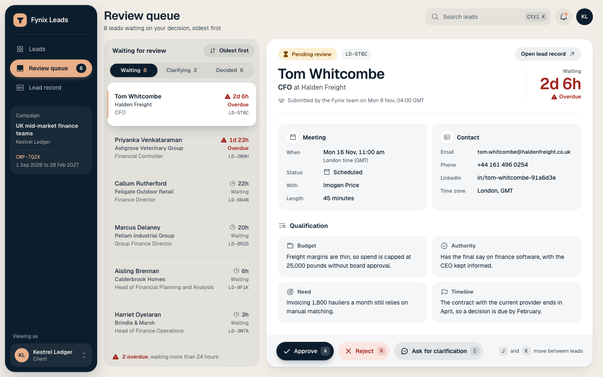
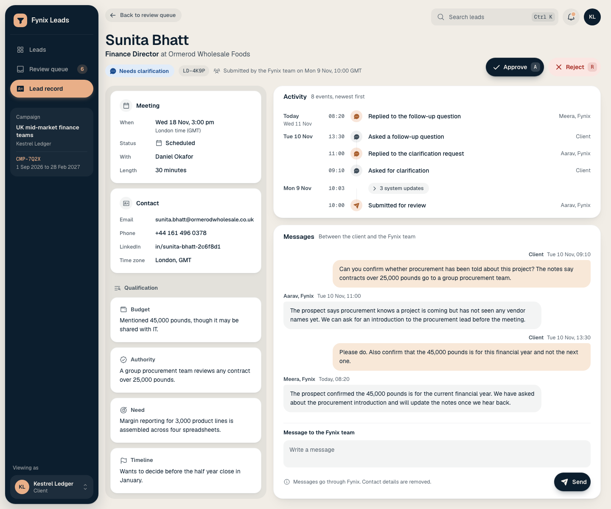
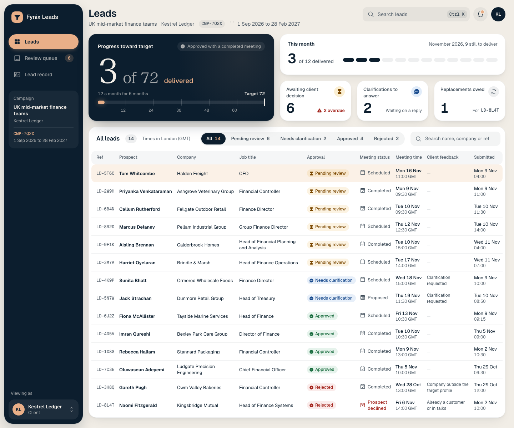
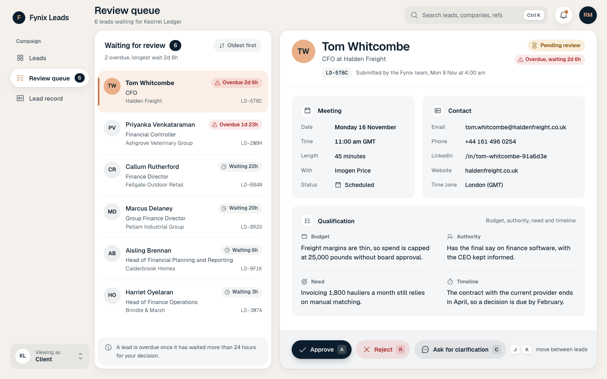
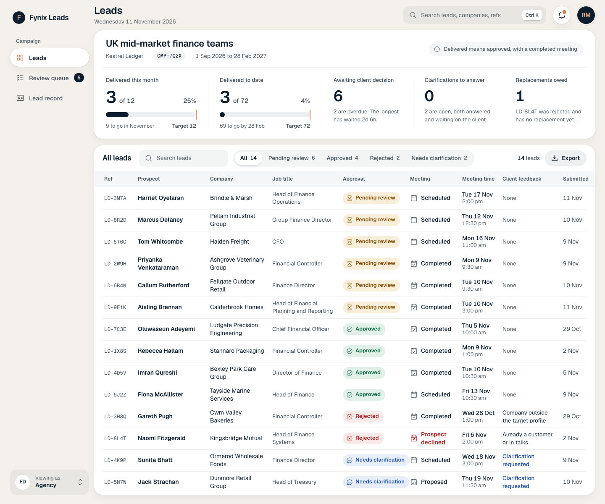
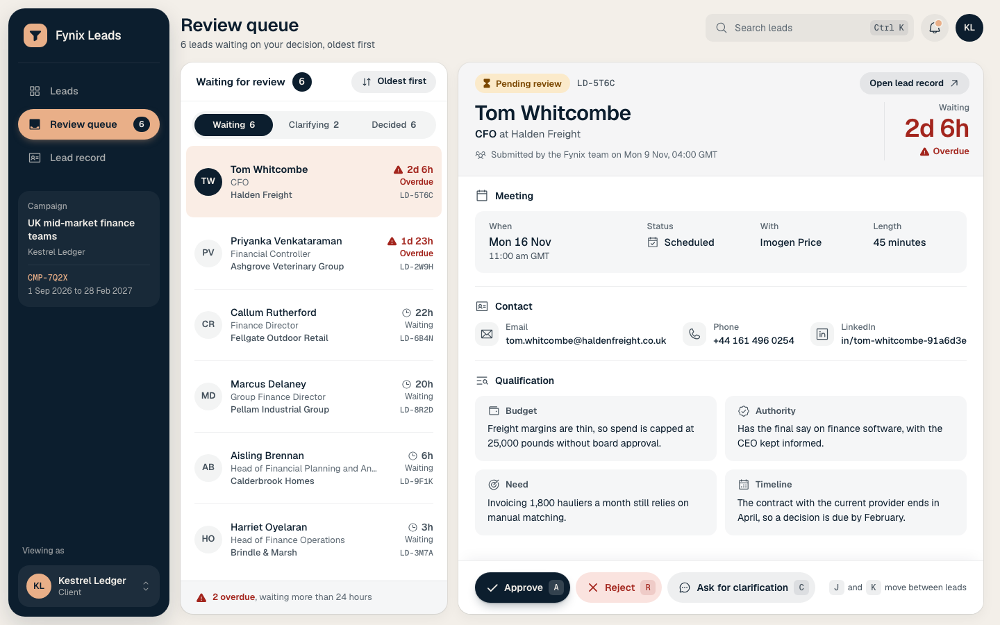
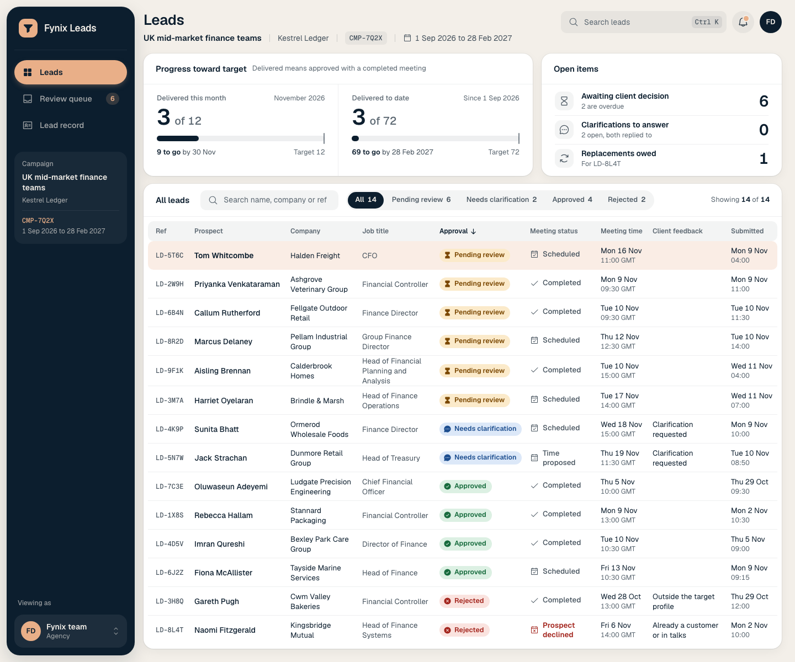
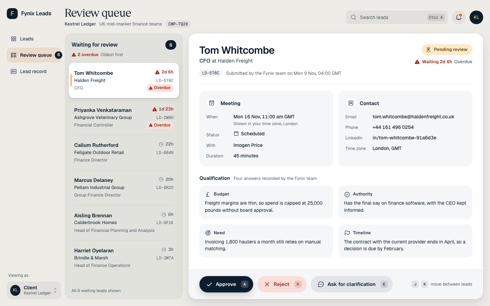
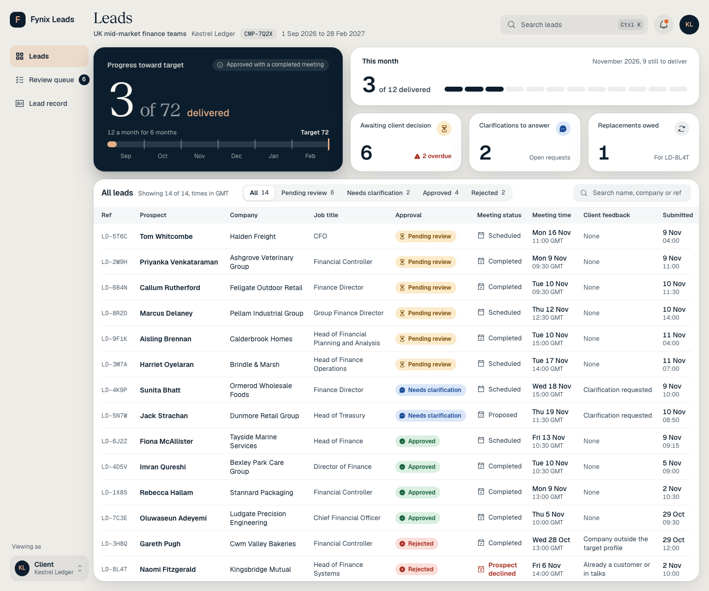

Fynix Leads design directions
Three directions for the same two screens: the client review queue and the leads overview. Click an image to open the full-size page. Each page is built for a 1440px wide window, so open it in a full-width browser tab.
D. Hybrid, your choice
Review queue
Navy rail, tonal list pane, lifted selected lead, tiles, action tray.

Open pageLead record
Details as tiles, activity timeline, message thread with the Fynix team.

Open pageLeads overview
Navy progress tile, key figures, the full lead table.

Open pageThe three earlier directions
A. Soft layered
Light panels on a warm canvas, a light sidebar, a tinted action tray.

Review queue open page
Leads overview open pageB. Navy shell
A floating navy sidebar with a peach active pill, structured light content.

Review queue open page
Leads overview open pageC. Modular workspace
Tonal panes and tiles, a lifted selected lead, a navy progress tile.

Review queue open page
Leads overview open page